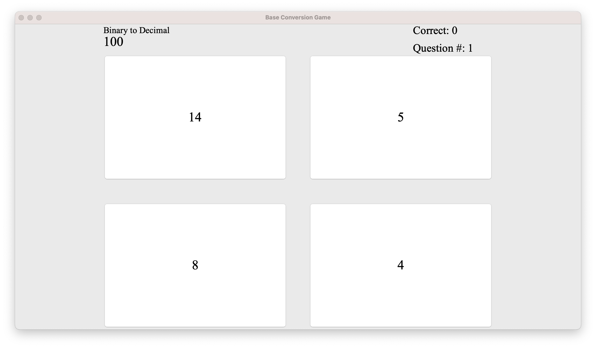

Number Base Conversion

Base Conversion Game home menu page
For the Create Performance Task for my AP Computer Science Principles class, I decided to create a base conversion game
in the Java language. The program was meant created to help my classmates in that class practice base conversions, hence
I added functionality that will save the question, the correct answer and the user's answer for review.
To make the program
even more user-friendly, I learned to create a GUI and implemented it onto this program. In fact, this was the FIRST
GUI program that I ever created.
The Process
Learned to create GUIs using the built-in JSwing library.
Used my knowledge of the Java programming language to create the functionality of the program.
Restricted myself to only one class for easier file transfers amongst peers (and making it easier to
upload code to College Board for the Create Performance Task).
Learned to organize GUI layouts for user-friendly designs and effective use of screen space.
View Github Repository